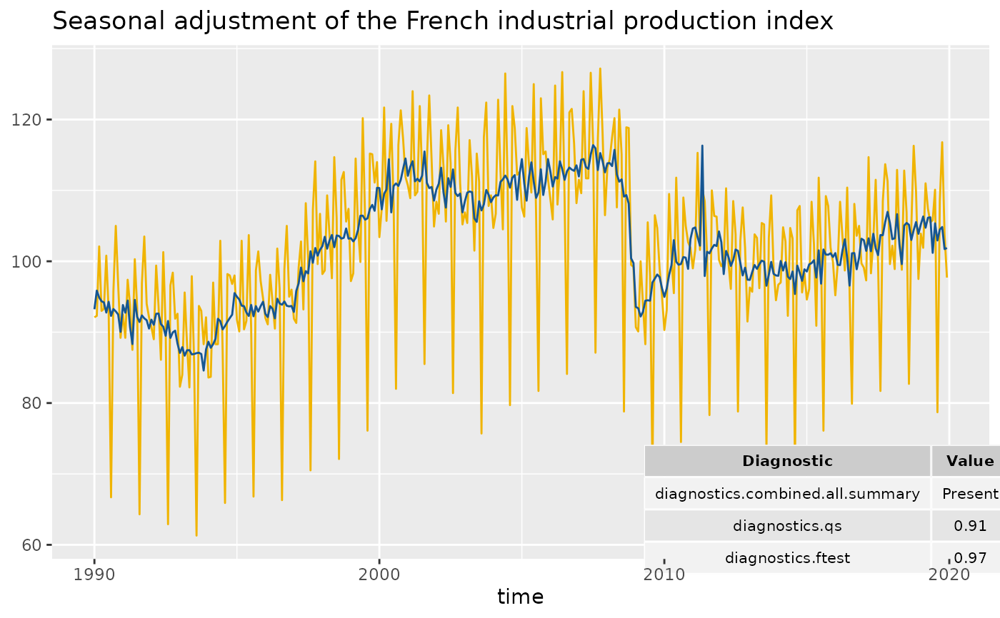
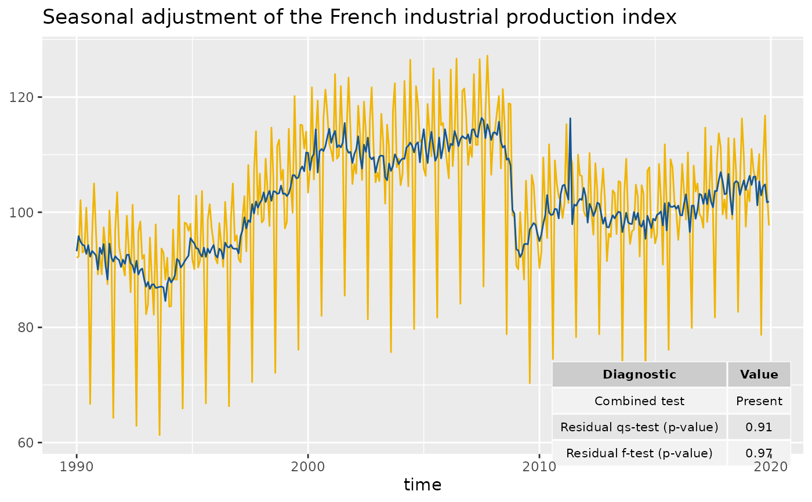
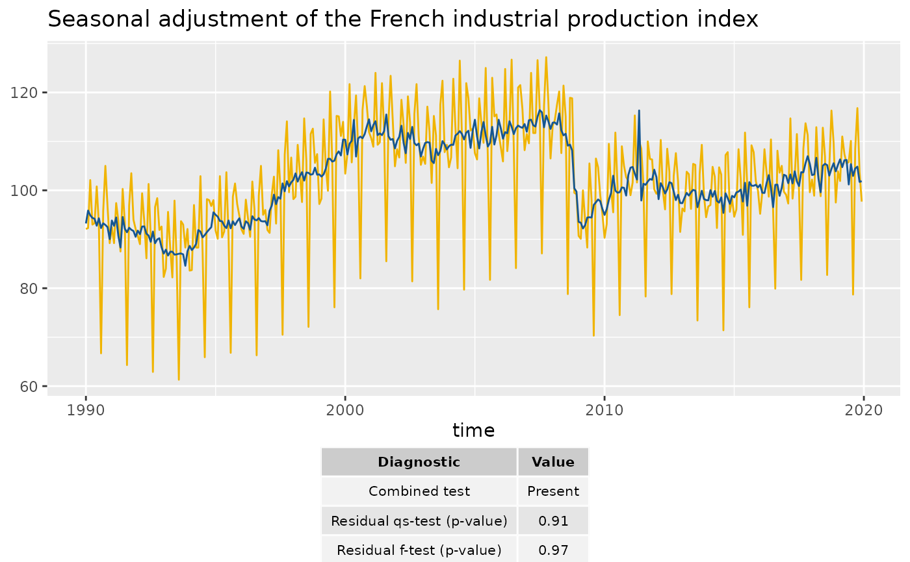

Adds a table of diagnostics to the plot
Usage
geom_diagnostics(
mapping = NULL,
data = NULL,
position = "identity",
...,
method = c("x13", "tramoseats"),
spec = NULL,
frequency = NULL,
message = TRUE,
diagnostics = NULL,
digits = 2,
xmin = -Inf,
xmax = Inf,
ymin = -Inf,
ymax = Inf,
table_theme = ttheme_default(),
inherit.aes = TRUE
)Arguments
- mapping
Set of aesthetic mappings created by aes() or aes_(). If specified and
inherit.aes = TRUE(the default), it is combined with the default mapping at the top level of the plot. You must supplymappingif there is no plot mapping.- data
A
data.framethat contains the data used for the seasonal adjustment.- position
Position adjustment, either as a string, or the result of a call to a position adjustment function.
- ...
Other arguments passed on to layer(). These are often aesthetics, used to set an aesthetic to a fixed value, like
colour = "red"orsize = 3.- method
the method used for the seasonal adjustment.
"x13"(by default) for the X-13ARIMA method and"tramoseats"for TRAMO-SEATS.- spec
the specification used for the seasonal adjustment. See x13() or tramoseats().
- frequency
the frequency of the time series. By default (
frequency = NULL), the frequency is computed automatically.- message
a
booleanindicating if a message is printed with the frequency used.- diagnostics
vector of character containing the name of the diagnostics to plot. See user_defined_variables() for the available parameters.
- digits
integer indicating the number of decimal places to be used for numeric diagnostics. By default
digits = 2.- xmin, xmax
x location (in data coordinates) giving horizontal location of raster.
- ymin, ymax
y location (in data coordinates) giving vertical location of raster.
- table_theme
list of theme parameters for the table of diagnostics (see ttheme_default()).
- inherit.aes
If
FALSE, overrides the default aesthetics, rather than combining with them.
Examples
p_sa_ipi_fr <- ggplot(data = ipi_c_eu_df, mapping = aes(x = date, y = FR)) +
geom_line(color = "#F0B400") +
labs(title = "Seasonal adjustment of the French industrial production index",
x = "time", y = NULL) +
geom_sa(color = "#155692", message = FALSE)
# To add of diagnostics with result of the X-11 combined test and the p-values
# of the residual seasonality qs and f tests:
diagnostics <- c("diagnostics.combined.all.summary", "diagnostics.qs", "diagnostics.ftest")
p_sa_ipi_fr +
geom_diagnostics(diagnostics = diagnostics,
ymin = 58, ymax = 72, xmin = 2010,
table_theme = gridExtra::ttheme_default(base_size = 8),
message = FALSE)

# To customize the names of the diagnostics in the plot:
diagnostics <- c(`Combined test` = "diagnostics.combined.all.summary",
`Residual qs-test (p-value)` = "diagnostics.qs",
`Residual f-test (p-value)` = "diagnostics.ftest")
p_sa_ipi_fr +
geom_diagnostics(diagnostics = diagnostics,
ymin = 58, ymax = 72, xmin = 2010,
table_theme = gridExtra::ttheme_default(base_size = 8),
message = FALSE)

# To add the table below the plot:
p_diag <- ggplot(data = ipi_c_eu_df, mapping = aes(x = date, y = FR)) +
geom_diagnostics(diagnostics = diagnostics,
table_theme = gridExtra::ttheme_default(base_size = 8),
message = FALSE) +
theme_void()
gridExtra::grid.arrange(p_sa_ipi_fr, p_diag,
nrow = 2, heights = c(4, 1))
